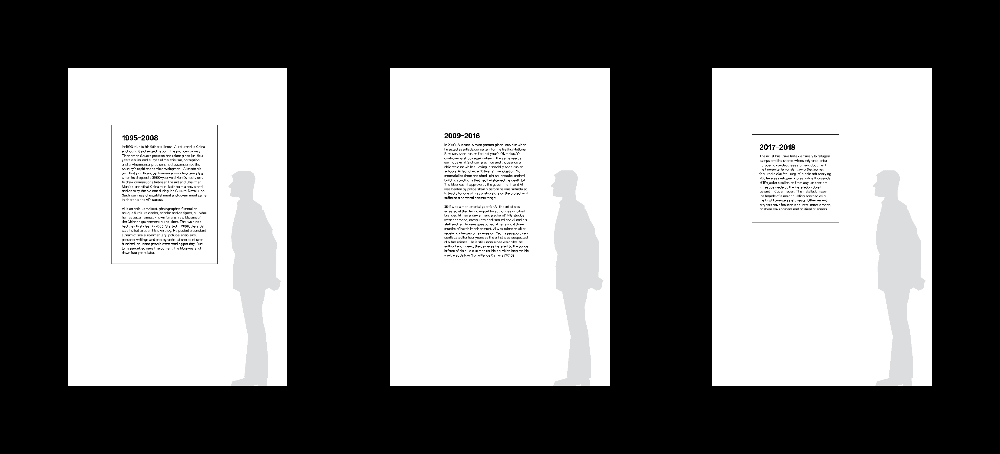
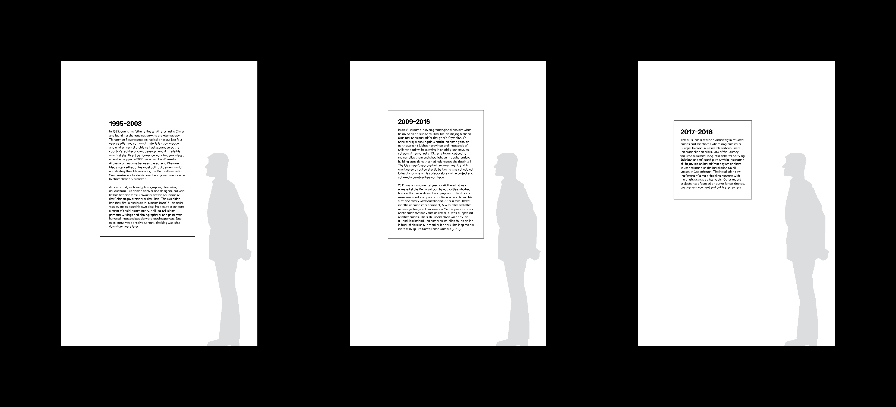

Inspired by Ai Weiwei’s artworks, and his life experience, an exhibition for Ai with a theme of Displacement was designed. The show is located in two placed: Beijing, China, where he was born, but displaced with his family, and New York, USA, where he was trained as an artist. The Beijing section of the exhibition is located in a SiHeYuan. The New York section is located in Moma PS1.
The two sections will showcase the same pieces of work with the same visual graphics, but extends to different mediums depending on the different ways of absorbing information for the two countries.

 
